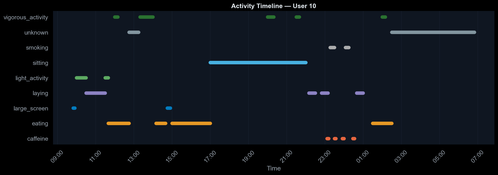
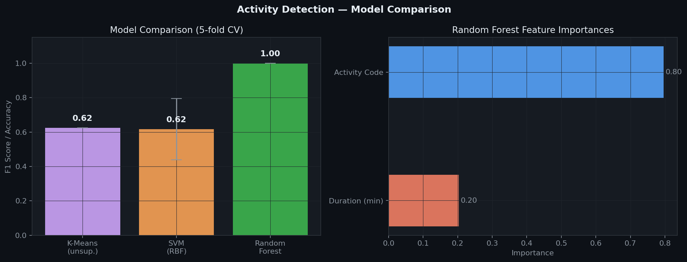
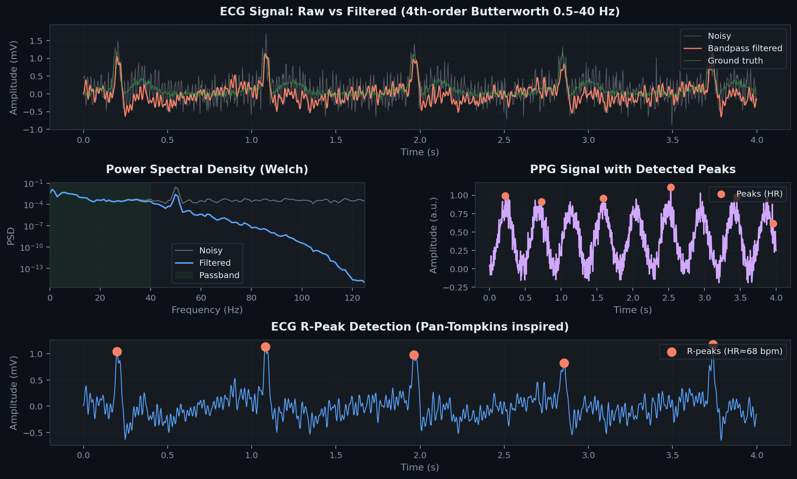
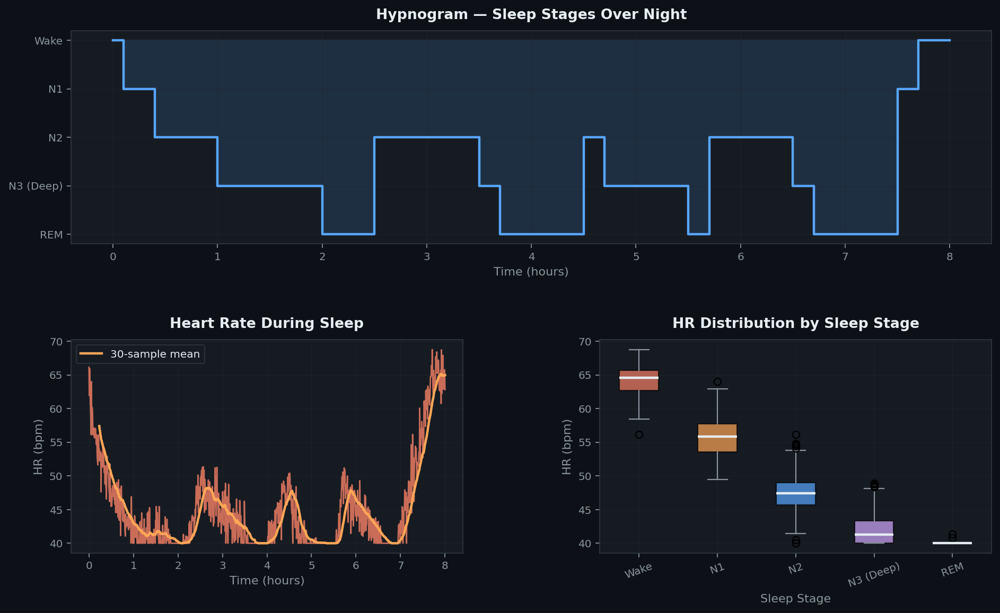
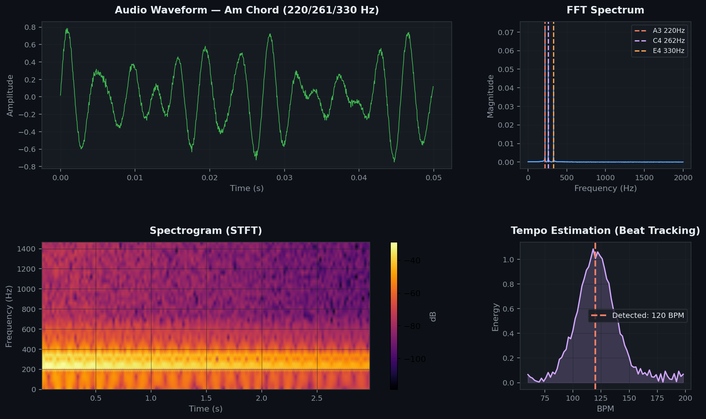
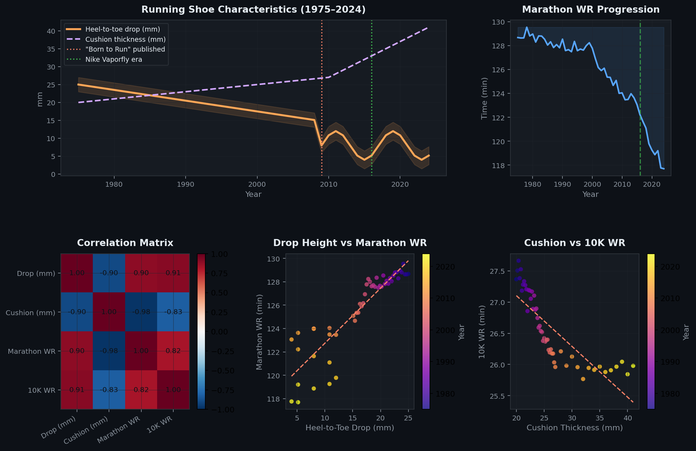
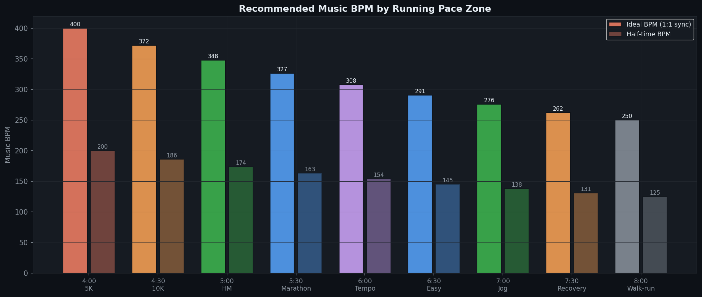

Exploratory analysis of physiological signals
Four interconnected modules, each exploring a different facet of physiological or biomechanical data science.







A reproducible end-to-end workflow from raw sensor data to insight, applicable across all project modules.
Load raw signals (CSV/EDF), inspect missing values, validate timestamps, check sampling rates. Flag artifacts early.
Bandpass / notch filtering (Butterworth), baseline wander removal, resampling, normalization. Visualize before/after PSD.
Window-based statistical features (mean, std, IQR, energy, zero-crossings), spectral features (PSD bands), and non-linear HRV measures (RMSSD, pNN50, SampEn).
K-Means clustering, PCA visualization, Isolation Forest for anomaly detection. Understand structure before adding labels.
Random Forest, SVM, and gradient boosting with leave-one-subject-out cross-validation. F1, confusion matrices, and feature importance.
Publication-quality figures, interactive dashboards, and reproducible notebooks. All code open-source on GitHub.
Open-source Python stack built for reproducible biomedical signal processing.